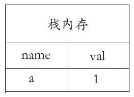
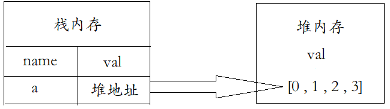
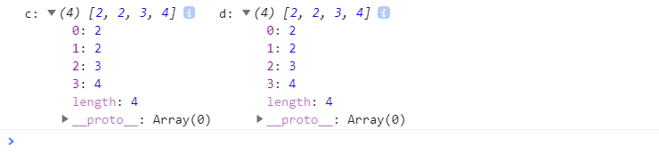
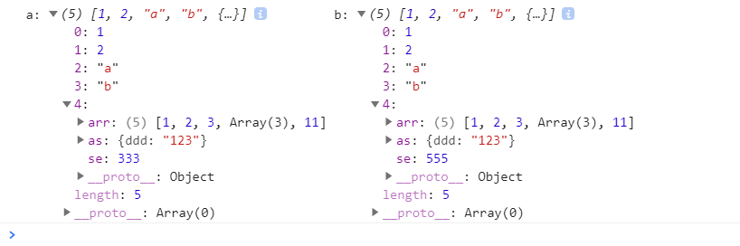

2021-4-14
基本数据类型：number，string，boolean，null，undefined，symbol以及未来ES10新增的BigInt(任意精度整数)七类。 引用数据类型：对象，数组，以及函数。 基本数据类型名值存储在栈内存中；
引用数据类型名存在栈内存中，值存在于堆内存中，但是栈内存会提供一个引用的地址指向堆内存中的值。
浅拷贝则是仅复制了栈内存、都指向同一个堆地址、所以都是同一个值。列如：
d拷贝c后修改d[0],c的值也随之改变了，因为d只拷贝了c中属性的栈内存(堆地址)都指向同一个堆内存、其d中属性的值并没有真正意义上的拷贝
深拷贝其本身就是针对于引用数据类型而言的、接下来我们来说说深拷贝的几种实现方式
1、手写递归实现深拷贝
我们修改b[4].se测试下 并没有改变a的相应的值
2、JSON.parse()和JSON.stringify()利用序列化和反序列化实现
注意这种方法无法实现对象中方法的深拷贝
3、我们还可以借用JQ的extend方法。$.extend( [deep ], target, object1 [, objectN ] ) deep表示是否深拷贝，为true为深拷贝，为false，则为浅拷贝 target Object类型 目标对象，其他对象的成员属性将被附加到该对象上。 object1 objectN可选。 Object类型 第一个以及第N个被合并的对象。
4、通过Object.assign()拷贝
注意： 当对象只有一级属性为深拷贝；当对象中有多级属性时，二级属性后就是浅拷贝
数组深拷贝的几种方法 1. concat(arr1, arr2,....) 注意：当数组中的元素均为一维是深拷贝，数组中元素一维以上是值的引用 2、slice(idx1, idx2)参数可以省略 1）没有参数是拷贝数组 2）只有一个参数是从该位置起到结束拷贝数组元素 3）两个参数，拷贝从起始位置到结束位置的元素（不包含结束位置的元素：含头不含尾）
注意：当数组中的元素均为一维是深拷贝，数组中元素一维以上是值的引用